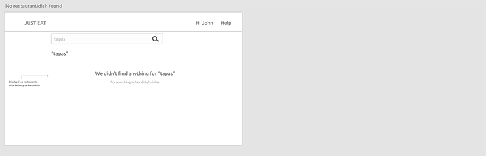
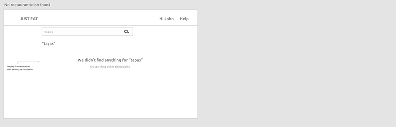

Ordering food online
Client: Just-eat.ie
THE PROBLEM
Just eat is misguiding the user to find restaurants in their area leading users to place orders that can not be delivered.
Just eat is an online platform to order food in your local area but the process doesn’t provide a great experience. The objective of this project was to understand how Just eat can be a better platform to find food within the user local area, with no hassle, and place an order in seconds, setting out a better solution that would produce more revenue.
The plan was to conduct usability testing and interviews to understand the user and create a new user flow. The end result is a medium fidelity prototype that was tested with users.
MY RESPONSABILITIES
- User Research
- Usability testing and interview
- User flow
- Low and Medium fidelity prototypes
MAIN GOAL
Design a solution that guides the user to find food within their delivery area and place a successful order.TIMELINE
One week sprint:- Monday: Map out the problem and pick an important place to focus.
- Tuesday: Sketch competing solutions on paper.
- Wednesday: Make difficult decisions and turn ideas into a testable hypothesis.
- Thursday: Hammer out a medium-fidelity prototype.
- Friday: Test it with real live humans.
Understand
the user
Conducted usability testing and interviews to understand the user, the goals, behaviours, environment and pain points.
The first thing to do was to set up some users and ask them to order some food. I chose to ask them to perform the following tasks on the website:
- Buy a burrito from any place you like
- Buy a pizza from any place you like
Some highlights on the usability tests
Usability test one
Snapshot
“I don’t want to find restaurants, I want to find a burrrito”
“I put one restaurant and then they showed me others here, so I am not sure what is going on”
Usability test two
Snapshot
"(Pizza Hut) called me and told me that they don’t deliver to Parkway as it is too long so they asked me to contact Just eat and cancel this order" “I am not sure how to cancel this…"
Other quotes from the users
Based on the research I could define the following
Users
Young adults, working from home due to COVID-19 and leaving in Dublin.
Goals
As a young adult working from home
I want to order lunch
So that I don’t need to cook and can focus on my work
Environment
Home: Due to Covid they are working from home and ordering food so that they don’t think about buying/chopping/ cooking and can focus on their job.
Behaviours
They have meetings to attend so they still have to keep a schedule to eat and continue working at a specific time.
Pain points
The usability tests showed the following pain points
1
Search field and “Find restaurants” button. It looks like it is asking the user to type the address of the restaurant — based on the example input.
2
“Find restaurants delivering right now, near you” — Text above the search field. That confuses the user as it might be asking for the delivery address.
3
When typing “burrito”, it shows a list of burrito places very far from my location — even in other Irish counties.
4
User has to actually make the job of finding if a restaurant that is close to them or not — the system should do this.
5
The dropdown with restaurant options is not telling the user if the top option is the closest one or not.
6
Displayed options are not even selling what the user is looking for.
7
No search field to look for a dish
8
Why Just-eat is confirming orders that they can not deliver?
9
If there are no restaurants near her area providing burrito — the software should clearly communicate it.
10
If the software is showing lists, explain what it is; is it all the restaurants available in Just-eat? are those the nearest to her place? Are all of the delivering to her area?
11
When picking items of your selection, the user gets a pop up with no option to go back and change — the user has to go out of the pop-up, click on the selection again and then choose again if the user makes a mistake the process has to be done again and again “which is inconvenient”. Applies for food and drinks or whatever the pop-up menu shows
12
Even if you log in, the home page is the same and it is asking for the user’s address. The account has already an address so why is it asking for it again? It should already show what restaurants are in the area.
Broken user flow
Whether the user logs in or not, the system is still asking for an address.
If the user logs in, means they have an account therefore they have set up an address already — why asking to double a step they have done already?
The system is showing the customer inaccurate information, guiding them to a failed user flow.
Whatever the user types: restaurant’s address, delivery address, dish or cuisine, the system auto-fills with a restaurant option that is not accurate and “looks for that”.
Concept design
Based on the research done I could identify the following use cases and set up some assumptions for this sprint.
Identified 3 use cases:
- I want to order a burrito — dish
- I want to order a burrito from Boojum — restaurant
- I don't know what I want, I’ll browse — list of restaurants
Some assumptions:
- User has already set up an account where he/she has provided a delivery address.
- Restaurants would have given Just-eat a max of km where they can deliver.
- System needs to calculate the user’s delivery radius to only show restaurants that can deliver to their address.
Making decisions to target pain points
I decided to focus on solving pain points 1 to 4, 6, 7 and 9. Preventing pain point 8 to happen.
1
Search field and “Find restaurants” button
Show input type for the search bar is an address and change the text of the button to a more generic “search”. Further research can be done to improve the text.
2
“Find restaurants delivering right now, near you” — Text above the search field.
Remove this text and clarify that system is asking for the user’s delivery address.
3
When typing “burrito”, it shows a list of burrito places very far from my location — even in other Irish counties.
Show burrito places only within the delivery area of the user.
4
User has to actually make the job of finding if a restaurant that is close to them or not — the system should do this.
Covered under the assumptions
6
Displayed options are not even selling what the user is looking for.
The system will manage this — user should only see restaurants within their delivery area.
7
No search field to look for a dish
Introducing a search field for dishes/restaurants and cuisines.
8
Why Just-eat is confirming orders that they can not deliver?
The user will not even see restaurants that can not deliver to their address therefore they can not place an order.
9
If there are no restaurants near her area providing burrito — the software should clearly communicate it.
Show a clear message that the dish/restaurant was not found.
Targetting
- Home page text and button
- Home page search — clearly define whether the user needs to enter a dish, restaurant address, and/or delivery address.
- The output on the results page
New user flow
Log in or new address
If the user has already an account, they can log in and save the step of typing their address. If the user doesn’t have an account or simply wants it delivered to another address they can go ahead and type the delivery address.
Search for a dish, restaurant, or cuisine
The rest of the flow is the same for both scenarios, where the user can search for a dish, restaurant, or cuisine, to then place an order.
Sketches
Sketches focused on the 3 use cases identified.
For the visual design I took the elements that the webpage already provides, as the implementation of this solution would fix the problem at a lower cost.
Low fidelity prototype
 

Medium fidelity prototype
Few things to bare in mind
For the prototype, I added the text that the user is supposed to enter:
- Home page: the address
- Looking for "burrito"
- Looking for a restaurant ("Boojum")
- Looking for "tapas"
Testing prototype with users
Addressing
pain point 1 and 2
"I have the option to log in or enter the address for delivery"
"I have to type the address here"
Addressing
pain point 3, 6 and 9
What do you expect to see? "Boojum options, the restaurants... the ones that will be delivering to Portobello"
"Oh, bad news, no tapas available"
Addressing
pain point 7
On the top search bar, what can you do? "I can just search for a type of dish,restaurant or cuisine"
Lessons learned
What did I learn from this journey?
- One week sprint is amazing and so much can be done. I feel like this methodology really helps to have a testable prototype in few days and iterate and improve from it. I loved it!!
- Iteration is important while sketching, creating low-fidelity, and medium-fidelity prototypes.
- There will always be room for improvement but I need to know when the work is good enough for the users.
- I need to find out how to create interactive prototypes where the user can insert text — is that only in html? Research showed that Invision doesn't support it and the workaround is to type it beforehand, as I did, but I am not satisfied with it.
- I practiced (initially) XD, Sketch and Invision. I used the tool that Sketch has to publish artboards into Invision — really time-saving!
- Keeping the same visual elements that Just eat currently uses allowed me to focus on the pain points and not on how it looks.
- During the usability tests, I noticed that at times, my replies were too prompt, leaving no room for the user to complete or continue an idea. I guess I got excited about fixing the issues. I will keep it in mind for my next ones.